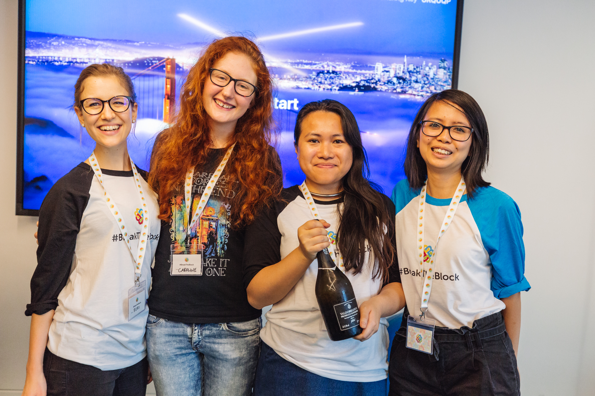

<!-- <div>Break The Block</div>

<div></div>

<h1>Game Jams</h1> -->

<!-- {% include game-jam-submission.html title="Dragon Feeder" theme="Risky Business" gamejam="Develop 2017" image='' youtube='' github="https://github.com/CarolineClark/Risky-Business" submission='https://devpost.com/software/what-the-clock' credits='Bambi: twitter.com/bambi | Carl Bateman: a | Jason Compose: a | Caroline Clark: A ' %} -->

<!-- {% include game-jam-submission.html title="What The Clock" theme="Shaping the future" gamejam="Jamchester 2017" image='' youtube='' github="https://github.com/CarolineClark/Jamchester2017" submission='https://devpost.com/software/what-the-clock' %} -->

<!-- {% include game-jam-submission.html title="Sardines" theme="Not there" gamejam="Nordic Game Jam 2017" image='' youtube='' github="https://github.com/robbie-c/nordic-game-jam-2017" submission='https://liney.itch.io/sardines' %} -->

{% include game-jam-submission.html title="Hyper Bat Simulator 2018" theme="Waves" gamejam="Global Game Jam 2017" youtube='https://www.youtube.com/embed/BhgdhHkUtZA' submission='http://globalgamejam.org/2017/games/hyper-bat-simulator' credits="Tobias Wehrum - Programmer,http://dragonlab.de|Miranda Tung - Artist,https://www.linkedin.com/in/miranda-tung-69412411b/|Emily Claudet - Generalist,http://www.emilyclaudet.com|Frederik Lindemann - Level designer,http://globalgamejam.org/users/frederik-lindemann|Caroline Clark - Programmer" %}

<!-- {% include game-jam-submission.html title="Time Cheaters" theme="Cheating Time" gamejam="InnoGames Jam, Oct 2016" image='' youtube='' github="" submission='' %} -->

{% include game-jam-submission.html title="Mask Mania" theme="Masks" gamejam="InnoGames Jam at GamesCom 2016" youtube='https://www.youtube.com/embed/LS4gcGUvH1Q' github="https://github.com/linseyray/maskarena" submission='https://igjam.eu/jams/igjam16/166' credits="Gerrit Halfmann - Art,http://gerrithalfmann.de/pixelart.html|Julia Lotzow - Game designer,https://igjam.eu/users/mogli88/|Katharina Ziolkowski - Art,facebook.de/echtkeinekunst|Linsey Raymaekers - Programmer,https://greenbean.carbonmade.com/about|Simon Schliesky - Programmer,plantandplay.eu|Caroline Clark - Programmer"%}

{% include game-jam-submission.html title="Ratzi" theme="You've Already Won" gamejam="Jamchester 2016" youtube='https://youtube.com/embed/_m_nAT4auek' github="https://github.com/Judokees/Ratzi" submission='https://devpost.com/software/judokees' credits='Paul Verache - Programmer,https://paulvarache.ninja/|Kevin Roony - Art,https://www.linkedin.com/in/kevin-roonio-rooney-97004772/|Sherif Maktabi - Art,https://www.linkedin.com/in/sherif-maktabi-77b7181b/|Caroline Clark - Programmer' %}
